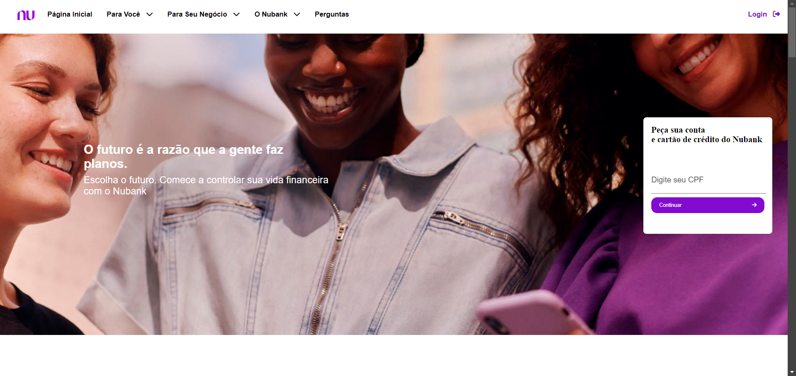
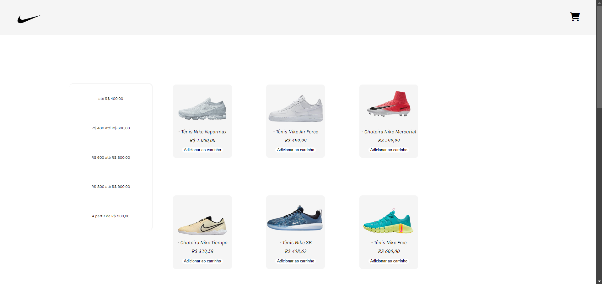
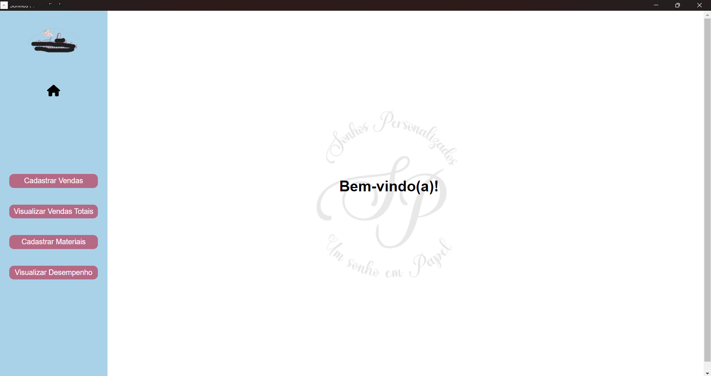

Sobre Mim
Técnico em Programação de Jogos e atualmente estudante de Ciência da Computação, tive a chance de adquirir um sólido entendimento sobre tecnologia.
Sempre fui fascinado por ir além do papel de simples usuário, explorando o funcionamento interno das coisas. Minha curiosidade constante me levou
a buscar conhecimento e, ao ingressar no curso técnico, me aproximei ainda mais do desenvolvimento, área que hoje se destaca como uma das
minhas maiores paixões. Nesse período, desenvolvi tanto habilidades
técnicas quanto interpessoais que têm sido valiosas em todos os projetos
que realizo. Estou sempre em busca de desafios que me tirem da zona de conforto e contribuam para meu crescimento pessoal e profissional.
Desenvolvedor full-stack com experiência em React, Node.js, Express e PostgreSQL. Estudante de Ciências da Computação, com prática no
desenvolvimento web com soluções completas, desde o frontend até o backend, incluindo design responsivo e integração de APIs.
Tenho experiência em projetos pessoais e acadêmicos, focando em interfaces intuitivas e desempenho otimizado. Busco sempre aprimorar minhas habilidades.
Habilidades
Html e Css - Intermediário
JavaScript - Intermediário
React - Intermediário
Node.js - Intermediário
Python - Intermediário
Java - Intermediário
Spring Boot - Básico
Banco de Dados Relacionais:
- PostgreSQL e MySql - Intermediário
Git e Github - Intermediário
Espanhol - Avançado
Inglês - Básico
Experiências
Site Nubank
Meu Primeiro Projeto!
Um projeto pessoal, onde decidi fazer umaréplica do front-end de um antigo site do Nubank,
com HTML, Css e JS. Site totalmente responsivo!
Repositório do Projeto se encontra em meu GitHub!
Nike Store-Web
Projeto Full-Stack!
Mais um Projeto Pessoal, nesse projeto tive a ideia de fazer
um e-commerce, peguei como exemplo produtos da Nike.
É um projeto que viso desenvolver muito ainda, pois
existem apenas funções básicas; adicionar ao carrinho;
ver os produtos, e o preço total, na page do carrinho e
filtrar produtos pelo preço.
Mais um Projeto Pessoal, nesse projeto tive a ideia de fazer um e-commerce, peguei como exemplo produtos da Nike. É um projeto que viso desenvolver muito ainda, pois existem apenas funções básicas; adicionar ao carrinho; ver os produtos, e o preço total, na page do carrinho e filtrar produtos pelo preço.
Nesse projeto, o Front-end é conectado com uma API, em Node.js, que registra
todos os pedidos no PostgreSQL.
Repositório do Projeto se encontra em meu GitHub!
Sistema de Gestão
Um Sistema Real, para uma Empresa Real!
Esse foi o meu primeiro projeto para uma organização,
tal empresa me contratou, informalmente, para desenvolver
um sistema de gestão simples, somente para controlar o que
se vende, e o que se compra, na empresa, já antes, esse processo
era feito de forma manual, então, resolvi esse problema desenvolvendo
esse sistema. Funciona com banco de dados em nuvem, totalmente
conectado com uma API, desenvolvida em Node.js. E o front-end,
feito com React, e Electron para transformar o sistema em um
arquivo .exe e executável.
Esse foi o meu primeiro projeto para uma organização, tal empresa me contratou, informalmente, para desenvolver um sistema de gestão simples, somente para controlar o que se vende, e o que se compra, na empresa, já antes, esse processo era feito de forma manual, então, resolvi esse problema desenvolvendo esse sistema. Funciona com banco de dados em nuvem, totalmente conectado com uma API, desenvolvida em Node.js. E o front-end, feito com React, e Electron para transformar o sistema em um arquivo .exe e executável.
PARTE desse projeto se encontra em meu GitHub
Educação
Programação de Jogos Digitais
Ecit Professor Braulio Maia Junior
JAN/2021 até DEZ/2023
Curso Técnico, integrado ao ensino médio, de desenvolvimento de jogos
Ciência da Computação
Unopar
FEV/2024 até JAN/2028
Bacharelado em Ciência da Computação